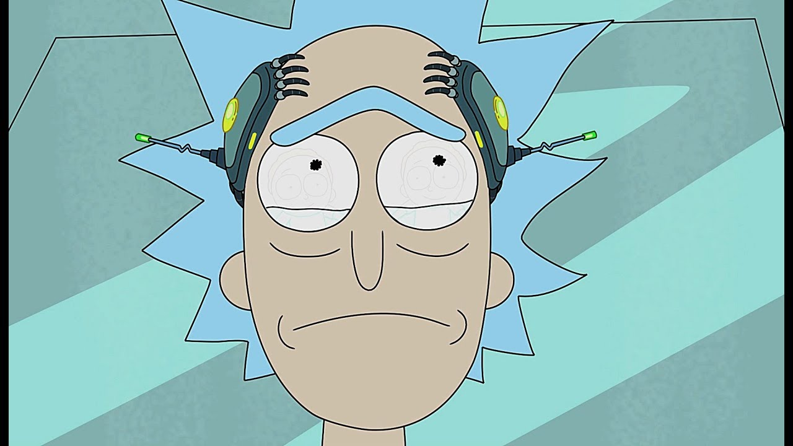
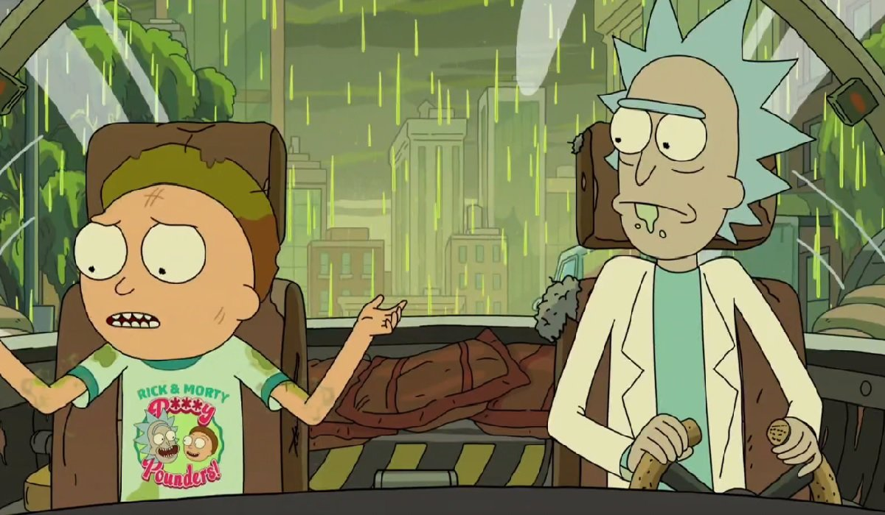
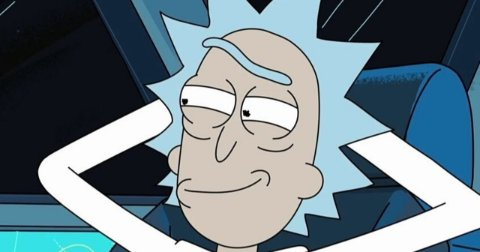

Se conoce durante la serie toda la historia de los personajes de la familia, pero no cual es la historia y la identidad de Rick. En base a esto y lo que el internet desata, han salido a la luz varias teorías; como que Rick perdió a su familia, razón que lo llevó al alcoholismo y la búsqueda de venganza. Los mismos creadores del programa, se burlan de esta teoría en el último episodio de la serie. Como podemos ver en el siguiente vídeo:
Para comprender a este personaje, en realidad, no necesitamos ir en búsqueda del pasado, sino, enfocarnos en su futuro. Pues desde el primer episodio, podemos notar que Rick es la versión adulta de su sobrino Morty.
La inteligencia y falta de propósito en la vida de Rick, son el resultado de lo que ha vivido. Mientras avanza la serie, vemos como Morty se asemeja más a Rick, perdiendo también el propósito de su vida. En una escena Rick advierte sobre la verdadera naturaleza del amor. “Escucha Morty, odio decírtelo pero lo que la gente llama amor, es solo una reacción química que obliga a los animales a reproducirse. Te golpea duro Morty, y luego lentamente desaparece. Dejándote destrozado en un matrimonio fracasado. Yo lo hice. Tus padres lo harán. Rompe el ciclo Morty, evoluciona, céntrate en la ciencia.”


Son muchas las pistas que apuntan a que realmente el chico terminara convirtiéndose en Rick. Cuando aparece el Morty malo, descubrimos que Rick se mantiene junto a él, gracias a que este le sirve como una suerte de camuflaje a sus ondas mentales. Es acá cuando la identidad de Rick se revela. Sus ondas mentales pueden ser rastreadas, pero lo que imposibilita que pase, es al estar cerca de Morty, como mencioné anteriormente.
Para comprender un poco, situémonos en el primer capitulo nuevamente. Nos muestran como luego de que una semilla hiciera contacto con Morty, este se volviera inteligente. Es así como se deduce que Morty, es una versión de Rick del pasado. Esto daría explicación porque sus ondas mentales al estar cerca de un Morty funcionan de esa forma, pues se trataría de la misma persona. Él como su nieto, y que exista un factor genético.
Si esta teoría fuera cierta, el resumen seria: Morty tiene aventuras con su abuelo y poco a poco pierde la esperanza, para transformarse en alguien que no tiene propósitos en la vida. Él trataría de escapar de su abuelo viajando al pasado. Conocería a una mujer que lo haría feliz, por un corto tiempo, hasta que descubre la realidad. Tuvo una esposa y una hija en su viaje al pasado, que en realidad es su madre, pues él es Rick. Al enterarse de esto caería en una profunda depresión que lo llevaría a perder a su mujer. Morty aceptaría su destino convirtiéndose en Rick.
